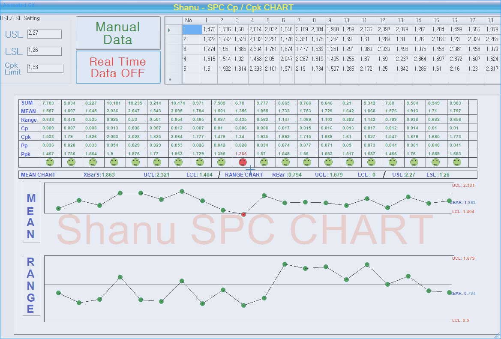
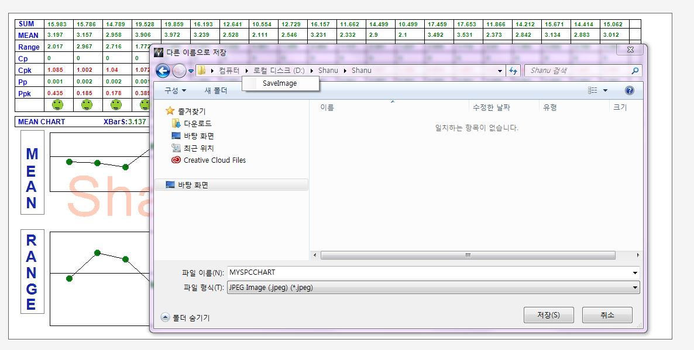

SPC CP and Cpk Chart in C# Windows Forms
Introduction

In this article we can see in detail about how to create a simple SPC (Statistical Process Control) Cp,CPk Chart.
I have been working on several automation projects. Nowadays automobile industry is interested in automated measuring machines to ensure quality and to compete in the global industry. The main part of any automation software is to get the accurate result with Quality check, for this purpose we use the SPC (Statistical Process Control) to find the quality result.
Capability is to get the continues data from any part and compare the result with Cp, Cpk, Pp and Ppk. WhereCp , Cpk are Process Capability and Pp , Ppk are process performance. Let’s consider one of my real time project, which is using in a Manufacturing Automation Measuring machines. Let’s consider now Camshaft, Crankshaft or any part of Car Engine which need to be check with Quality control. The check part will be measured using some kind for Sensors for example in our project we use a digital sensor for measuring Camshaft and Crankshaft. Using the sensor we get continues data and the real time data will be check with SPC Cp,Cpk,Pp and Ppk charts. Display the final output to the operator and to the Quality control Engineer. Here is my real time project screen. All the Measurement data was been received from the Digital Sensor.
For the SPC chart in the market there is very few Third party chart controls are available and there is no any free chart for SPC Cp,Cpk,Pp and Ppk. I thought to create a simple SPC Cp,Cpk,Pp and Ppk chart .As a result after a long study about SPC and all its functionality I have created a simple SPC Cp,Cpk,Pp and Ppk chart. Hope you all will like it.
I have created the SPC chart as a User Control .You can just add my User Control dll to the project and use it.
Shanu CpCpkChart User control Features:
- Display chart with Sum, Mean and Range values.
- Cp, Cpk, Pp, Ppk with alert result text warning with Red for NG and green for OK result.
- Mean (XBAR) and Range (RBAR) chart with Alert image with Red for NG and green for OK result.
- Automatic Calculate and display UCL(Upper Control Limit),LCL(Lower Control Limit) Value with both XBAR and RBAR value.
- Save Chart as Image (Note to save the Chart image double click the chart or right click and save as Image).
- Real Time data Gathering and display in the Chart.
- User can add Chart Watermark text.
First let’s see what is Cp and Cpk
Cp and Cpk - >Process Capability
- Cp -- measures how well the data fits within the spec limits (USL, LSL)
- Cpk - measures how centered the data is between the spec limits.
Cp and Cpk formula

Cp=(USL-LSL/6SIGMA) -> USL-LSL/6*RBAR/d2
Cpk=min(USL-XBAR/3Sigma,LSL-XBAR/3Sigma)
Pp and Ppk -> Process Performance
- Pp - measures how well the data fits within the spec limits (USL, LSL)
- Ppk - measures how centered the data is between the spec limits.
Pp,Ppk formula

Pp=(USL-LSL/6SIGMA) -> USL-LSL/6 STDEV
Ppk=min(USL-XBAR/3STDEV,LSL-XBAR/3STDEV)
Reference websites
Building the Sample
Now let’s see how I have created a SPC Cp, Cpk chart. My main aim is to make a very simple SPC Chart which can be used by the end users.
I have created a SPC Cp,Cpk Chart as a User Control so that it can be used easily in all projects.
In this article i have attached zip file named as ShanuSPCCpCpkChart.zip. Which contain’s my SPC chart user control Source and a Demo program.
1) " ShanuCPCPKChart.dll" You can use this user controls in your project and pass the data as DataTable to userCotnrol.
In the user control I will get the DataTable value and calculate the result to display as
- Sum
- Mean
- Range
- Cp
- Cpk
- Pp
- Ppk
Bind all the result to the chart with smiley alert image. If the data is good then display the green smiley and if the data is NG(Not Good).Using the mean and Range values I will plot the result as Mean and Range chart with Alert Image.
User can pass the USL (upper Specification Limit), LSL (lower Specification Limit) Cpk Limit values to theShanuCPCPKChart user control. Using the USL,LSL and Cpk value the result will be calculated and display the appropriate alert with red if NG for Cp, Cpk ,Pp, Ppk values .If the result is good then green text will be displayed to Cp, Cpk, Pp, Ppk in the chart.
2) " ShanuSPCCpCPK_Demo " Folder (This folder contains the Demo program which includes the ShanuCPCPKChart user control with Random Data sample).
Note : I have used DataTable as the data input for the User Control .From the windows form we need to pass the DataTable to User control to plot the Cp,Cpk ,Pp and Ppk result with SPC Range Chart.
Save Chart User can save the Chart by double clicking on the chart control or by right click the chart and click save.
Description
SPC User Control program
First we will start with the User Control .To Create a user control .
1. Create a new Windows Control Library project.
2. Set the Name of Project and Click Ok(here my user control name is ShanuCPCPKChart).
3. Add all the controls which is needed.
4. In code behind declare all the public variables and Public Method.In User control I have added one panel and one Picture Box Control.
public DataTable dt = new DataTable();
Font f12 = new Font("arial", 12, FontStyle.Bold, GraphicsUnit.Pixel);
Pen B1pen = new Pen(Color.Black, 1);
Pen B2pen = new Pen(Color.Black, 2);
Double XDoublkeBAR = 0;
Double RBAR = 0;
Double XBARUCL = 0;
Double XBARLCL = 0;
Double RANGEUCL = 0;
Double RANGELCL = 0;
Double[] intMeanArrayVals;
Double[] intRangeArrayVals;
Double[] intSTDEVArrayVals;
Double[] intXBARArrayVals;
int First_chartDatarectHeight = 80;
Font f10 = new Font("arial", 10, FontStyle.Bold, GraphicsUnit.Pixel);
LinearGradientBrush a2 = new LinearGradientBrush(new RectangleF(0, 0, 100, 19), Color.DarkGreen, Color.Green, LinearGradientMode.Horizontal);
LinearGradientBrush a3 = new LinearGradientBrush(new RectangleF(0, 0, 100, 19), Color.DarkRed, Color.Red, LinearGradientMode.Horizontal);
LinearGradientBrush a1 = new LinearGradientBrush(new RectangleF(0, 0, 100, 19), Color.Blue, Color.DarkBlue, LinearGradientMode.Horizontal);
public DataTable dt = new DataTable(); Font f12 = new Font("arial", 12, FontStyle.Bold, GraphicsUnit.Pixel); Pen B1pen = new Pen(Color.Black, 1); Pen B2pen = new Pen(Color.Black, 2); Double XDoublkeBAR = 0; Double RBAR = 0; Double XBARUCL = 0; Double XBARLCL = 0; Double RANGEUCL = 0; Double RANGELCL = 0; Double[] intMeanArrayVals; Double[] intRangeArrayVals; Double[] intSTDEVArrayVals; Double[] intXBARArrayVals; int First_chartDatarectHeight = 80; Font f10 = new Font("arial", 10, FontStyle.Bold, GraphicsUnit.Pixel); LinearGradientBrush a2 = new LinearGradientBrush(new RectangleF(0, 0, 100, 19), Color.DarkGreen, Color.Green, LinearGradientMode.Horizontal); LinearGradientBrush a3 = new LinearGradientBrush(new RectangleF(0, 0, 100, 19), Color.DarkRed, Color.Red, LinearGradientMode.Horizontal); LinearGradientBrush a1 = new LinearGradientBrush(new RectangleF(0, 0, 100, 19), Color.Blue, Color.DarkBlue, LinearGradientMode.Horizontal);
public void Bindgrid(DataTable dtnew)
{
if (dtnew != null)
{
dt = dtnew;
PicBox.Refresh();
}
}
public void Bindgrid(DataTable dtnew) { if (dtnew != null) { dt = dtnew; PicBox.Refresh(); } }
public void PicBox_Paint(object sender, PaintEventArgs e)
{
if (dt.Rows.Count <= 0)
{
return;
}
int opacity = 68; // 50% opaque (0 = invisible, 255 = fully opaque)
e.Graphics.DrawString(ChartWaterMarkText,
new Font("Arial", 72),
new SolidBrush(Color.FromArgb(opacity, Color.OrangeRed)),
80,
PicBox.Height / 2 - 15);
int NoofTrials = dt.Rows.Count;
int NoofParts = dt.Columns.Count - 1;
intMeanArrayVals = new Double[NoofParts];
intRangeArrayVals = new Double[NoofParts];
intSTDEVArrayVals = new Double[NoofParts];
intXBARArrayVals = new Double[NoofParts];
if (dt.Rows.Count <= 0)
{
return;
}
PicBox.Width = dt.Columns.Count * 50 + 40;
// 1) For the Chart Data Display ---------
e.Graphics.DrawRectangle(Pens.Black, 10, 10, PicBox.Width - 20, First_chartDatarectHeight + 78);
// for the chart data Horizontal Line Display
e.Graphics.DrawLine(B1pen, 10, 25, PicBox.Width - 10, 25);
e.Graphics.DrawLine(B1pen, 10, 45, PicBox.Width - 10, 45);
e.Graphics.DrawLine(B1pen, 10, 65, PicBox.Width - 10, 65);
e.Graphics.DrawLine(B1pen, 10, 85, PicBox.Width - 10, 85);
e.Graphics.DrawLine(B1pen, 10, 105, PicBox.Width - 10, 105);
e.Graphics.DrawLine(B1pen, 10, 125, PicBox.Width - 10, 125);
e.Graphics.DrawLine(B1pen, 10, 145, PicBox.Width - 10, 145);
// e.Graphics.DrawLine(B1pen, 10, 165, PicBox.Width - 10, 165);
// for the chart data Vertical Line Display
e.Graphics.DrawLine(B1pen, 60, 10, 60, First_chartDatarectHeight + 87);
e.Graphics.DrawLine(B1pen, 110, 10, 110, First_chartDatarectHeight + 87);
//-------------
// DrawItemEventArgs String
e.Graphics.DrawString("SUM", f12, a1, 14, 10);
e.Graphics.DrawString("MEAN", f12, a1, 14, 30);
e.Graphics.DrawString("Range", f12, a1, 14, 50);
e.Graphics.DrawString("Cp", f12, a1, 14, 70);
e.Graphics.DrawString("Cpk", f12, a1, 14, 90);
e.Graphics.DrawString("Pp", f12, a1, 14, 110);
e.Graphics.DrawString("Ppk", f12, a1, 14, 130);
// load data
//Outer Loop for Columns count
int xLineposition = 110;
int xStringDrawposition = 14;
Double[] locStdevarr;
for (int iCol = 1; iCol <= dt.Columns.Count - 1; iCol++)
{
//inner Loop for Rows count
Double Sumresult = 0;
Double Meanresult = 0;
Double Rangeresult = 0;
Double minRangeValue = int.MaxValue;
Double maxRangeValue = int.MinValue;
locStdevarr = new Double[NoofTrials];
for (int iRow = 0; iRow < dt.Rows.Count; iRow++)
{
Sumresult = Sumresult + System.Convert.ToDouble(dt.Rows[iRow][iCol].ToString());
Double accountLevel = System.Convert.ToDouble(dt.Rows[iRow][iCol].ToString());
minRangeValue = Math.Min(minRangeValue, accountLevel);
maxRangeValue = Math.Max(maxRangeValue, accountLevel);
locStdevarr[iRow] = System.Convert.ToDouble(dt.Rows[iRow][iCol].ToString());
}
xLineposition = xLineposition + 50;
xStringDrawposition = xStringDrawposition + 50;
e.Graphics.DrawLine(B1pen, xLineposition, 10, xLineposition, First_chartDatarectHeight + 87);
//Sum Data Display
e.Graphics.DrawString(Math.Round(Sumresult, 3).ToString(), f10, a2, xStringDrawposition, 12);
//MEAN Data Display
Meanresult = Sumresult / NoofTrials;
e.Graphics.DrawString(Math.Round(Meanresult, 3).ToString(), f10, a2, xStringDrawposition, 30);
//RANGE Data Display
Rangeresult = maxRangeValue - minRangeValue;
e.Graphics.DrawString(Math.Round(Rangeresult, 3).ToString(), f10, a2, xStringDrawposition, 50);
//XDoubleBar used to display in chart
XDoublkeBAR = XDoublkeBAR + Meanresult;
//RBAR used to display in chart
RBAR = RBAR + Rangeresult;
intMeanArrayVals[iCol - 1] = Meanresult;
intRangeArrayVals[iCol - 1] = Rangeresult;
intSTDEVArrayVals[iCol - 1] = StandardDeviation(locStdevarr);
}
//End 1 ) -------------------
// 2) --------------------------
// XdoubleBAr/RBAR/UCL and LCL Calculation.
//XDoubleBar used to display in chart
XDoublkeBAR = XDoublkeBAR / NoofParts;
//RBAR used to display in chart
RBAR = RBAR / NoofParts;
//XBARUCL to display in chart
XBARUCL = XDoublkeBAR + UCLLCLTYPE("A2", RBAR, NoofTrials);
//XBARLCL to display in chart
XBARLCL = XDoublkeBAR - UCLLCLTYPE("A2", RBAR, NoofTrials);
//XBARUCL to display in chart
RANGEUCL = UCLLCLTYPE("D4", RBAR, NoofTrials);
//XBARLCL to display in chart
RANGELCL = UCLLCLTYPE("D3", RBAR, NoofTrials);
//2.1) Status Display inside pic grid +++++++++++++++++++++++++++
int XCirclegDrawposition = 24;
int YCirclegDrawposition = 147;
xStringDrawposition = 14;
for (int i = 0; i < intMeanArrayVals.Length; i++)
{
Color pointColor = new Color();
pointColor = Color.YellowGreen;
XCirclegDrawposition = XCirclegDrawposition + 50;
Point p1 = new Point();
p1.X = XCirclegDrawposition;
p1.Y = YCirclegDrawposition;
if (intMeanArrayVals[i] < XBARLCL)
{
pointColor = Color.Red;
}
else if (intMeanArrayVals[i] > XBARUCL)
{
pointColor = Color.Red;
}
Pen pen = new Pen(Color.SeaGreen);
e.Graphics.DrawPie(pen, p1.X, p1.Y, 18, 18, 0, 360);
e.Graphics.FillPie(new SolidBrush(pointColor), p1.X, p1.Y, 18, 18, 10, 360);
pen = new Pen(Color.Black);
e.Graphics.DrawPie(pen, p1.X + 3, p1.Y + 4, 2, 2, 10, 360);
e.Graphics.DrawPie(pen, p1.X + 11, p1.Y + 4, 2, 2, 10, 360);
e.Graphics.DrawPie(pen, p1.X + 5, p1.Y + 12, 8, 4, 10, 180);
// 1)
//Cp Calculation (((((((((((((((((((((((((((
//Cp=(USL-LSL/6SIGMA) -> USL-LSL/6*RBAR/d2
Double d2 = d2Return(NoofTrials);
Double USLResult = USLs - LSLs;
Double RBARS = intRangeArrayVals[i] / NoofTrials;
Double Sigma = RBARS / d2;
Double CpResult = USLResult / 6 * Sigma;
xStringDrawposition = xStringDrawposition + 50;
e.Graphics.DrawString(Math.Round(CpResult, 3).ToString(), f10, a2, xStringDrawposition, 70);
//End Cp Calculation ))))))))))))))
// 2)
//Cpk Calculation \\\\\\\\\\\\\\\\\\\\\\\\\\\\\\\\\\\\\\\
//Cpk=min(USL-XBAR/3Sigma,LSL-XBAR/3Sigma)
Double CpU = USLs - intMeanArrayVals[i] / 3 * Sigma;
Double CpL = intMeanArrayVals[i] - LSLs / 3 * Sigma;
Double CpkResult = Math.Min(CpU, CpL);
if (CpkResult < CpkPpKAcceptanceValue)
{
e.Graphics.DrawString(Math.Round(CpkResult, 3).ToString(), f10, a3, xStringDrawposition, 90);
}
else
{
e.Graphics.DrawString(Math.Round(CpkResult, 3).ToString(), f10, a2, xStringDrawposition, 90);
}
//End Cpk Calculation \\\\\\\\\\\\\\\\\\\\\\\\\\\\\\\\\\\\\\\
// 3)
//Pp Calculation {{{{{{{{{{{{{{{{{{{{{{{{{{{{{{{{
//Pp=(USL-LSL/6SIGMA) -> USL-LSL/6 STDEV
Double PpResult = USLResult / 6 * intSTDEVArrayVals[i];
e.Graphics.DrawString(Math.Round(PpResult, 3).ToString(), f10, a2, xStringDrawposition, 110);
//End Pp Calculation }}}}}}}}}}}}}}}}}}}}}}}}}}}}}}}}}
// 4)
//PpK Calculation ``````````````````````````````````````````````````````
//PpK=min(USL-XBAR/3STDEV,LSL-XBAR/3STDEVa)
Double PpU = USLs - intMeanArrayVals[i] / 3 * intSTDEVArrayVals[i];
Double PpL = intMeanArrayVals[i] - LSLs / 3 * intSTDEVArrayVals[i];
Double PpkResult = Math.Min(PpU, PpL);
if (PpkResult < CpkPpKAcceptanceValue)
{
e.Graphics.DrawString(Math.Round(PpkResult, 3).ToString(), f10, a3, xStringDrawposition, 130);
}
else
{
e.Graphics.DrawString(Math.Round(PpkResult, 3).ToString(), f10, a2, xStringDrawposition, 130);
}
// end of Ppk `````````````````````````````````````````````````````````````
}
//end of 2.1) ++++++++++++++++
//---------------------------------
//3) Average chart Display ---------------
// e.Graphics.DrawRectangle(Pens.Black, 10, 10, picSpcChart.Width - 20, First_chartDatarectHeight);
int chartAvarageDatarectHeight = 18;
e.Graphics.DrawRectangle(Pens.Black, 10, First_chartDatarectHeight + 96, PicBox.Width - 20, chartAvarageDatarectHeight);
e.Graphics.DrawLine(B2pen, 476, 194, 480, 176);
e.Graphics.DrawString("MEAN CHART", f12, a1, 14, First_chartDatarectHeight + 98);
e.Graphics.DrawString("XBarS:", f12, a1, 160, First_chartDatarectHeight + 98);
e.Graphics.DrawString(Math.Round(XDoublkeBAR, 3).ToString(), f12, a2, 202, First_chartDatarectHeight + 98);
e.Graphics.DrawString("UCL:", f12, a1, 300, First_chartDatarectHeight + 98);
e.Graphics.DrawString(Math.Round(XBARUCL, 3).ToString(), f12, a2, 330, First_chartDatarectHeight + 98);
e.Graphics.DrawString("LCL:", f12, a1, 400, First_chartDatarectHeight + 98);
e.Graphics.DrawString(Math.Round(XBARLCL, 3).ToString(), f12, a2, 430, First_chartDatarectHeight + 98);
e.Graphics.DrawString("RANGE CHART", f12, a1, 490, First_chartDatarectHeight + 98);
e.Graphics.DrawString("RBar : ", f12, a1, 600, First_chartDatarectHeight + 98);
e.Graphics.DrawString(Math.Round(RBAR, 3).ToString(), f12, a2, 638, First_chartDatarectHeight + 98);
e.Graphics.DrawString("UCL : ", f12, a1, 700, First_chartDatarectHeight + 98);
e.Graphics.DrawString(Math.Round(RANGEUCL, 3).ToString(), f12, a2, 734, First_chartDatarectHeight + 98);
e.Graphics.DrawString("LCL : ", f12, a1, 800, First_chartDatarectHeight + 98);
e.Graphics.DrawString(Math.Round(RANGELCL, 3).ToString(), f12, a2, 834, First_chartDatarectHeight + 98);
// vertical Line
e.Graphics.DrawLine(B2pen, 860, 194, 866, 176);
e.Graphics.DrawString("USL : ", f12, a1, 880, First_chartDatarectHeight + 98);
e.Graphics.DrawString(Math.Round(USLs, 3).ToString(), f12, a2, 910, First_chartDatarectHeight + 98);
e.Graphics.DrawString("LSL : ", f12, a1, 960, First_chartDatarectHeight + 98);
e.Graphics.DrawString(Math.Round(LSLs, 3).ToString(), f12, a2, 990, First_chartDatarectHeight + 98);
//Mean Line Chart
DrawLineChart(e.Graphics, intMeanArrayVals, XBARUCL, XBARLCL, PicBox.Width - 70, 154, 60, 170, "MEAN", XDoublkeBAR);
DrawLineChart(e.Graphics, intRangeArrayVals, RANGEUCL, RANGELCL, PicBox.Width - 70, 154, 60, 340, "RANGE", RBAR);
//End 3)---------------------
}
public void PicBox_Paint(object sender, PaintEventArgs e) { if (dt.Rows.Count <= 0) { return; } int opacity = 68; // 50% opaque (0 = invisible, 255 = fully opaque) e.Graphics.DrawString(ChartWaterMarkText, new Font("Arial", 72), new SolidBrush(Color.FromArgb(opacity, Color.OrangeRed)), 80, PicBox.Height / 2 - 15); int NoofTrials = dt.Rows.Count; int NoofParts = dt.Columns.Count - 1; intMeanArrayVals = new Double[NoofParts]; intRangeArrayVals = new Double[NoofParts]; intSTDEVArrayVals = new Double[NoofParts]; intXBARArrayVals = new Double[NoofParts]; if (dt.Rows.Count <= 0) { return; } PicBox.Width = dt.Columns.Count * 50 + 40; // 1) For the Chart Data Display --------- e.Graphics.DrawRectangle(Pens.Black, 10, 10, PicBox.Width - 20, First_chartDatarectHeight + 78); // for the chart data Horizontal Line Display e.Graphics.DrawLine(B1pen, 10, 25, PicBox.Width - 10, 25); e.Graphics.DrawLine(B1pen, 10, 45, PicBox.Width - 10, 45); e.Graphics.DrawLine(B1pen, 10, 65, PicBox.Width - 10, 65); e.Graphics.DrawLine(B1pen, 10, 85, PicBox.Width - 10, 85); e.Graphics.DrawLine(B1pen, 10, 105, PicBox.Width - 10, 105); e.Graphics.DrawLine(B1pen, 10, 125, PicBox.Width - 10, 125); e.Graphics.DrawLine(B1pen, 10, 145, PicBox.Width - 10, 145); // e.Graphics.DrawLine(B1pen, 10, 165, PicBox.Width - 10, 165); // for the chart data Vertical Line Display e.Graphics.DrawLine(B1pen, 60, 10, 60, First_chartDatarectHeight + 87); e.Graphics.DrawLine(B1pen, 110, 10, 110, First_chartDatarectHeight + 87); //------------- // DrawItemEventArgs String e.Graphics.DrawString("SUM", f12, a1, 14, 10); e.Graphics.DrawString("MEAN", f12, a1, 14, 30); e.Graphics.DrawString("Range", f12, a1, 14, 50); e.Graphics.DrawString("Cp", f12, a1, 14, 70); e.Graphics.DrawString("Cpk", f12, a1, 14, 90); e.Graphics.DrawString("Pp", f12, a1, 14, 110); e.Graphics.DrawString("Ppk", f12, a1, 14, 130); // load data //Outer Loop for Columns count int xLineposition = 110; int xStringDrawposition = 14; Double[] locStdevarr; for (int iCol = 1; iCol <= dt.Columns.Count - 1; iCol++) { //inner Loop for Rows count Double Sumresult = 0; Double Meanresult = 0; Double Rangeresult = 0; Double minRangeValue = int.MaxValue; Double maxRangeValue = int.MinValue; locStdevarr = new Double[NoofTrials]; for (int iRow = 0; iRow < dt.Rows.Count; iRow++) { Sumresult = Sumresult + System.Convert.ToDouble(dt.Rows[iRow][iCol].ToString()); Double accountLevel = System.Convert.ToDouble(dt.Rows[iRow][iCol].ToString()); minRangeValue = Math.Min(minRangeValue, accountLevel); maxRangeValue = Math.Max(maxRangeValue, accountLevel); locStdevarr[iRow] = System.Convert.ToDouble(dt.Rows[iRow][iCol].ToString()); } xLineposition = xLineposition + 50; xStringDrawposition = xStringDrawposition + 50; e.Graphics.DrawLine(B1pen, xLineposition, 10, xLineposition, First_chartDatarectHeight + 87); //Sum Data Display e.Graphics.DrawString(Math.Round(Sumresult, 3).ToString(), f10, a2, xStringDrawposition, 12); //MEAN Data Display Meanresult = Sumresult / NoofTrials; e.Graphics.DrawString(Math.Round(Meanresult, 3).ToString(), f10, a2, xStringDrawposition, 30); //RANGE Data Display Rangeresult = maxRangeValue - minRangeValue; e.Graphics.DrawString(Math.Round(Rangeresult, 3).ToString(), f10, a2, xStringDrawposition, 50); //XDoubleBar used to display in chart XDoublkeBAR = XDoublkeBAR + Meanresult; //RBAR used to display in chart RBAR = RBAR + Rangeresult; intMeanArrayVals[iCol - 1] = Meanresult; intRangeArrayVals[iCol - 1] = Rangeresult; intSTDEVArrayVals[iCol - 1] = StandardDeviation(locStdevarr); } //End 1 ) ------------------- // 2) -------------------------- // XdoubleBAr/RBAR/UCL and LCL Calculation. //XDoubleBar used to display in chart XDoublkeBAR = XDoublkeBAR / NoofParts; //RBAR used to display in chart RBAR = RBAR / NoofParts; //XBARUCL to display in chart XBARUCL = XDoublkeBAR + UCLLCLTYPE("A2", RBAR, NoofTrials); //XBARLCL to display in chart XBARLCL = XDoublkeBAR - UCLLCLTYPE("A2", RBAR, NoofTrials); //XBARUCL to display in chart RANGEUCL = UCLLCLTYPE("D4", RBAR, NoofTrials); //XBARLCL to display in chart RANGELCL = UCLLCLTYPE("D3", RBAR, NoofTrials); //2.1) Status Display inside pic grid +++++++++++++++++++++++++++ int XCirclegDrawposition = 24; int YCirclegDrawposition = 147; xStringDrawposition = 14; for (int i = 0; i < intMeanArrayVals.Length; i++) { Color pointColor = new Color(); pointColor = Color.YellowGreen; XCirclegDrawposition = XCirclegDrawposition + 50; Point p1 = new Point(); p1.X = XCirclegDrawposition; p1.Y = YCirclegDrawposition; if (intMeanArrayVals[i] < XBARLCL) { pointColor = Color.Red; } else if (intMeanArrayVals[i] > XBARUCL) { pointColor = Color.Red; } Pen pen = new Pen(Color.SeaGreen); e.Graphics.DrawPie(pen, p1.X, p1.Y, 18, 18, 0, 360); e.Graphics.FillPie(new SolidBrush(pointColor), p1.X, p1.Y, 18, 18, 10, 360); pen = new Pen(Color.Black); e.Graphics.DrawPie(pen, p1.X + 3, p1.Y + 4, 2, 2, 10, 360); e.Graphics.DrawPie(pen, p1.X + 11, p1.Y + 4, 2, 2, 10, 360); e.Graphics.DrawPie(pen, p1.X + 5, p1.Y + 12, 8, 4, 10, 180); // 1) //Cp Calculation ((((((((((((((((((((((((((( //Cp=(USL-LSL/6SIGMA) -> USL-LSL/6*RBAR/d2 Double d2 = d2Return(NoofTrials); Double USLResult = USLs - LSLs; Double RBARS = intRangeArrayVals[i] / NoofTrials; Double Sigma = RBARS / d2; Double CpResult = USLResult / 6 * Sigma; xStringDrawposition = xStringDrawposition + 50; e.Graphics.DrawString(Math.Round(CpResult, 3).ToString(), f10, a2, xStringDrawposition, 70); //End Cp Calculation )))))))))))))) // 2) //Cpk Calculation \\\\\\\\\\\\\\\\\\\\\\\\\\\\\\\\\\\\\\\ //Cpk=min(USL-XBAR/3Sigma,LSL-XBAR/3Sigma) Double CpU = USLs - intMeanArrayVals[i] / 3 * Sigma; Double CpL = intMeanArrayVals[i] - LSLs / 3 * Sigma; Double CpkResult = Math.Min(CpU, CpL); if (CpkResult < CpkPpKAcceptanceValue) { e.Graphics.DrawString(Math.Round(CpkResult, 3).ToString(), f10, a3, xStringDrawposition, 90); } else { e.Graphics.DrawString(Math.Round(CpkResult, 3).ToString(), f10, a2, xStringDrawposition, 90); } //End Cpk Calculation \\\\\\\\\\\\\\\\\\\\\\\\\\\\\\\\\\\\\\\ // 3) //Pp Calculation {{{{{{{{{{{{{{{{{{{{{{{{{{{{{{{{ //Pp=(USL-LSL/6SIGMA) -> USL-LSL/6 STDEV Double PpResult = USLResult / 6 * intSTDEVArrayVals[i]; e.Graphics.DrawString(Math.Round(PpResult, 3).ToString(), f10, a2, xStringDrawposition, 110); //End Pp Calculation }}}}}}}}}}}}}}}}}}}}}}}}}}}}}}}}} // 4) //PpK Calculation `````````````````````````````````````````````````````` //PpK=min(USL-XBAR/3STDEV,LSL-XBAR/3STDEVa) Double PpU = USLs - intMeanArrayVals[i] / 3 * intSTDEVArrayVals[i]; Double PpL = intMeanArrayVals[i] - LSLs / 3 * intSTDEVArrayVals[i]; Double PpkResult = Math.Min(PpU, PpL); if (PpkResult < CpkPpKAcceptanceValue) { e.Graphics.DrawString(Math.Round(PpkResult, 3).ToString(), f10, a3, xStringDrawposition, 130); } else { e.Graphics.DrawString(Math.Round(PpkResult, 3).ToString(), f10, a2, xStringDrawposition, 130); } // end of Ppk ````````````````````````````````````````````````````````````` } //end of 2.1) ++++++++++++++++ //--------------------------------- //3) Average chart Display --------------- // e.Graphics.DrawRectangle(Pens.Black, 10, 10, picSpcChart.Width - 20, First_chartDatarectHeight); int chartAvarageDatarectHeight = 18; e.Graphics.DrawRectangle(Pens.Black, 10, First_chartDatarectHeight + 96, PicBox.Width - 20, chartAvarageDatarectHeight); e.Graphics.DrawLine(B2pen, 476, 194, 480, 176); e.Graphics.DrawString("MEAN CHART", f12, a1, 14, First_chartDatarectHeight + 98); e.Graphics.DrawString("XBarS:", f12, a1, 160, First_chartDatarectHeight + 98); e.Graphics.DrawString(Math.Round(XDoublkeBAR, 3).ToString(), f12, a2, 202, First_chartDatarectHeight + 98); e.Graphics.DrawString("UCL:", f12, a1, 300, First_chartDatarectHeight + 98); e.Graphics.DrawString(Math.Round(XBARUCL, 3).ToString(), f12, a2, 330, First_chartDatarectHeight + 98); e.Graphics.DrawString("LCL:", f12, a1, 400, First_chartDatarectHeight + 98); e.Graphics.DrawString(Math.Round(XBARLCL, 3).ToString(), f12, a2, 430, First_chartDatarectHeight + 98); e.Graphics.DrawString("RANGE CHART", f12, a1, 490, First_chartDatarectHeight + 98); e.Graphics.DrawString("RBar : ", f12, a1, 600, First_chartDatarectHeight + 98); e.Graphics.DrawString(Math.Round(RBAR, 3).ToString(), f12, a2, 638, First_chartDatarectHeight + 98); e.Graphics.DrawString("UCL : ", f12, a1, 700, First_chartDatarectHeight + 98); e.Graphics.DrawString(Math.Round(RANGEUCL, 3).ToString(), f12, a2, 734, First_chartDatarectHeight + 98); e.Graphics.DrawString("LCL : ", f12, a1, 800, First_chartDatarectHeight + 98); e.Graphics.DrawString(Math.Round(RANGELCL, 3).ToString(), f12, a2, 834, First_chartDatarectHeight + 98); // vertical Line e.Graphics.DrawLine(B2pen, 860, 194, 866, 176); e.Graphics.DrawString("USL : ", f12, a1, 880, First_chartDatarectHeight + 98); e.Graphics.DrawString(Math.Round(USLs, 3).ToString(), f12, a2, 910, First_chartDatarectHeight + 98); e.Graphics.DrawString("LSL : ", f12, a1, 960, First_chartDatarectHeight + 98); e.Graphics.DrawString(Math.Round(LSLs, 3).ToString(), f12, a2, 990, First_chartDatarectHeight + 98); //Mean Line Chart DrawLineChart(e.Graphics, intMeanArrayVals, XBARUCL, XBARLCL, PicBox.Width - 70, 154, 60, 170, "MEAN", XDoublkeBAR); DrawLineChart(e.Graphics, intRangeArrayVals, RANGEUCL, RANGELCL, PicBox.Width - 70, 154, 60, 340, "RANGE", RBAR); //End 3)--------------------- }
- Create a new Windows project.
- Open your form and then from Toolbox > right-click > choose items > browse to select your user control DLL and add.
- Drag the User Control to your Windows Forms form.
- Call the "Bindgrid" method of the user control and pass the DataTable to the User Control and check the result.
/Global variable Declaration
#region Local Vairables
DataTable dt = new DataTable();
private static readonly Random random = new Random();
Double gridMinvalue = 1.2;
Double gridMaxvalue = 2.4;
int totalColumntoDisplay = 20;
Double USLs = 2.27;
Double LSLs = 1.26;
Double CpkPpkAcceptanceValue = 1.33;
#endregion
/Global variable Declaration #region Local Vairables DataTable dt = new DataTable(); private static readonly Random random = new Random(); Double gridMinvalue = 1.2; Double gridMaxvalue = 2.4; int totalColumntoDisplay = 20; Double USLs = 2.27; Double LSLs = 1.26; Double CpkPpkAcceptanceValue = 1.33; #endregion
/Create Datatable Colums.
public void loadGridColums()
{
dt.Columns.Add("No");
for (int jval = 1; jval <= totalColumntoDisplay; jval++)
{
dt.Columns.Add(jval.ToString());
}
}
/Create Datatable Colums. public void loadGridColums() { dt.Columns.Add("No"); for (int jval = 1; jval <= totalColumntoDisplay; jval++) { dt.Columns.Add(jval.ToString()); } }
public void loadgrid()
{
dt.Clear();
dt.Rows.Clear();
for (int i = 1; i <= 5; i++)
{
DataRow row = dt.NewRow();
row["NO"] = i.ToString();
for (int jval = 1; jval <= totalColumntoDisplay; jval++)
{
row[jval.ToString()] = RandomNumberBetween(gridMinvalue, gridMaxvalue);
}
dt.Rows.Add(row);
}
dataGridView1.AutoResizeColumns();
dataGridView1.DataSource = dt;
dataGridView1.AutoResizeColumns();
}
public void loadgrid() { dt.Clear(); dt.Rows.Clear(); for (int i = 1; i <= 5; i++) { DataRow row = dt.NewRow(); row["NO"] = i.ToString(); for (int jval = 1; jval <= totalColumntoDisplay; jval++) { row[jval.ToString()] = RandomNumberBetween(gridMinvalue, gridMaxvalue); } dt.Rows.Add(row); } dataGridView1.AutoResizeColumns(); dataGridView1.DataSource = dt; dataGridView1.AutoResizeColumns(); }
private void Form1_Load(object sender, EventArgs e)
{
loadGridColums();
loadgrid();
USLs = Convert.ToDouble(txtusl.Text);
LSLs = Convert.ToDouble(txtLSL.Text);
CpkPpkAcceptanceValue = Convert.ToDouble(txtData.Text);
shanuCPCPKChart.USL = USLs;
shanuCPCPKChart.LSL = LSLs;
shanuCPCPKChart.CpkPpKAcceptanceValue = CpkPpkAcceptanceValue;
shanuCPCPKChart.Bindgrid(dt);
}
private void Form1_Load(object sender, EventArgs e) { loadGridColums(); loadgrid(); USLs = Convert.ToDouble(txtusl.Text); LSLs = Convert.ToDouble(txtLSL.Text); CpkPpkAcceptanceValue = Convert.ToDouble(txtData.Text); shanuCPCPKChart.USL = USLs; shanuCPCPKChart.LSL = LSLs; shanuCPCPKChart.CpkPpKAcceptanceValue = CpkPpkAcceptanceValue; shanuCPCPKChart.Bindgrid(dt); }
private void timer1_Tick(object sender, EventArgs e)
{
loadgrid();
USLs = Convert.ToDouble(txtusl.Text);
LSLs = Convert.ToDouble(txtLSL.Text);
CpkPpkAcceptanceValue = Convert.ToDouble(txtData.Text);
shanuCPCPKChart.USL = USLs;
shanuCPCPKChart.LSL = LSLs;
shanuCPCPKChart.CpkPpKAcceptanceValue = CpkPpkAcceptanceValue;
shanuCPCPKChart.Bindgrid(dt);
}
private void timer1_Tick(object sender, EventArgs e) { loadgrid(); USLs = Convert.ToDouble(txtusl.Text); LSLs = Convert.ToDouble(txtLSL.Text); CpkPpkAcceptanceValue = Convert.ToDouble(txtData.Text); shanuCPCPKChart.USL = USLs; shanuCPCPKChart.LSL = LSLs; shanuCPCPKChart.CpkPpKAcceptanceValue = CpkPpkAcceptanceValue; shanuCPCPKChart.Bindgrid(dt); }
Source Code Files
- ShanuCPCPKChart.zip
More Information
You can find both the demo project and Chart Source program with attached Zip File.